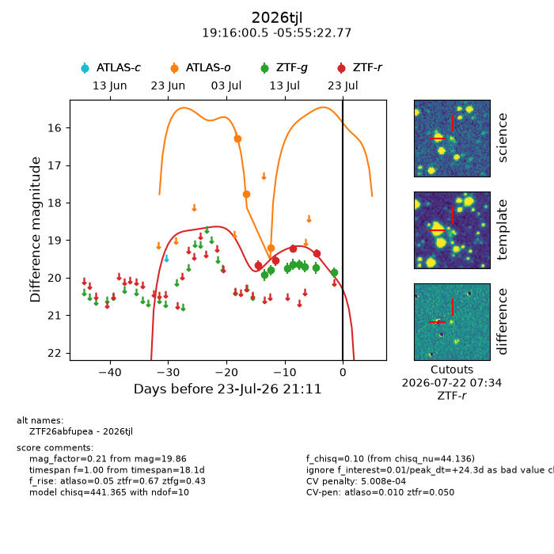
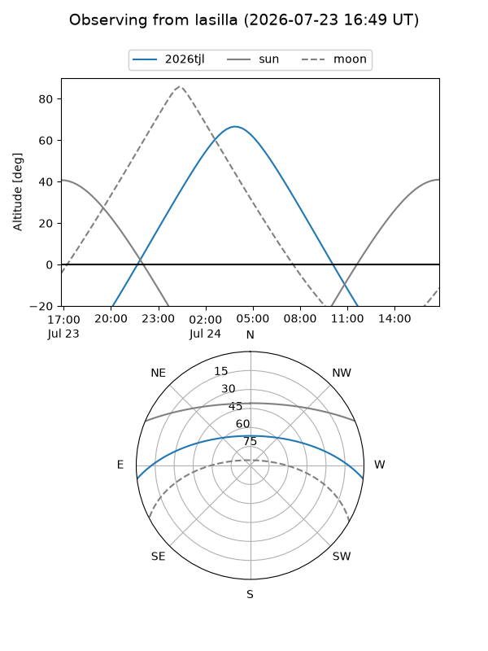
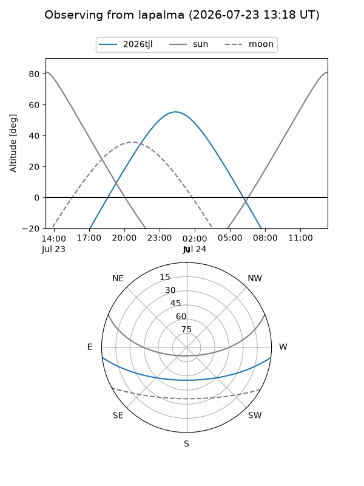
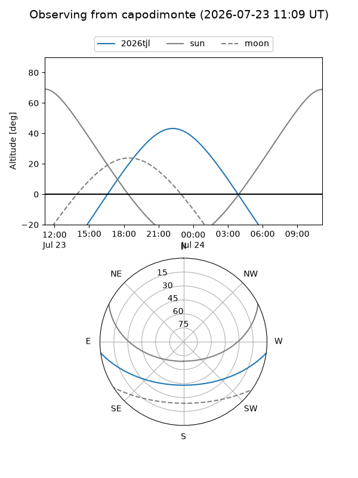
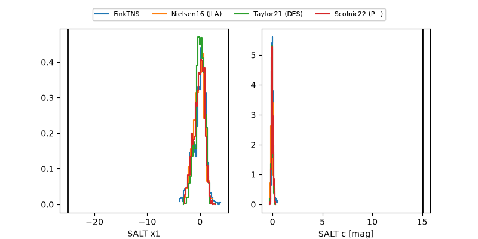

2026tjl
Target 2026tjl at 2026-07-23 21:14
Aliases and brokers:
FINK-ZTF: ztf.fink-portal.org/ZTF26abfupea
Lasair-ZTF: lasair-ztf.lsst.ac.uk/objects/ZTF26abfupea
ALeRCE-ZTF: alerce.online/object/ZTF26abfupea
YSE-PZ: ziggy.ucolick.org/yse/transient_detail/2026tjl
TNS name: wis-tns.org/object/2026tjl
Direct TNS query: direct search
alt names
ZTF26abfupea (ztf,fink_ztf)
2026tjl (tns,yse)
Coordinates:
equatorial (ra, dec) = 289.0021,-5.92299
equatorial (HMS+DMS) = 19:16:00.51,-05:55:22.77
galactic (l, b) = (30.4245,-8.15074)
Flags:
TNS type: nan
peak dt: +24.3
likely cv: !!
Photometry:
last atlaso=19.21, ztfg=19.86, ztfr=19.34
3 atlaso, 8 ztfg, 4 ztfr detections
Lightcurve

Visibility



Additional plots
